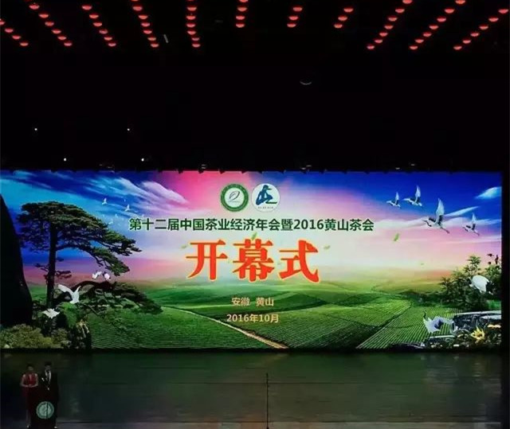
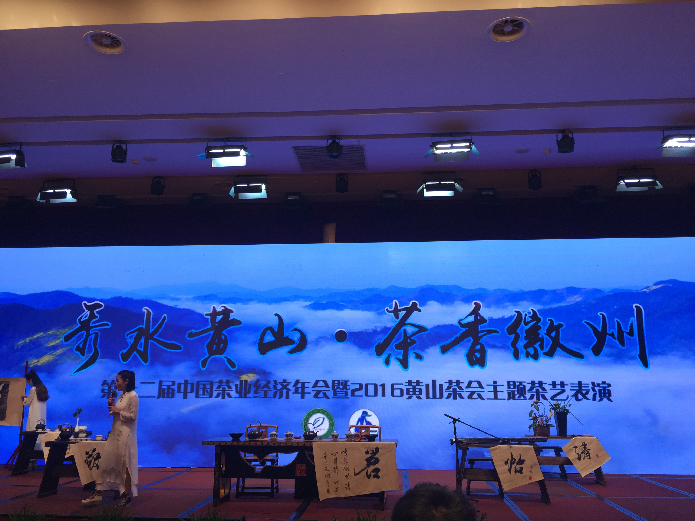
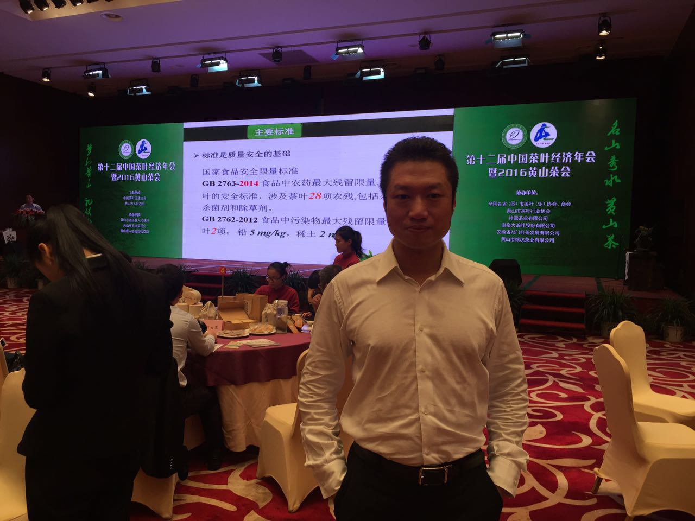
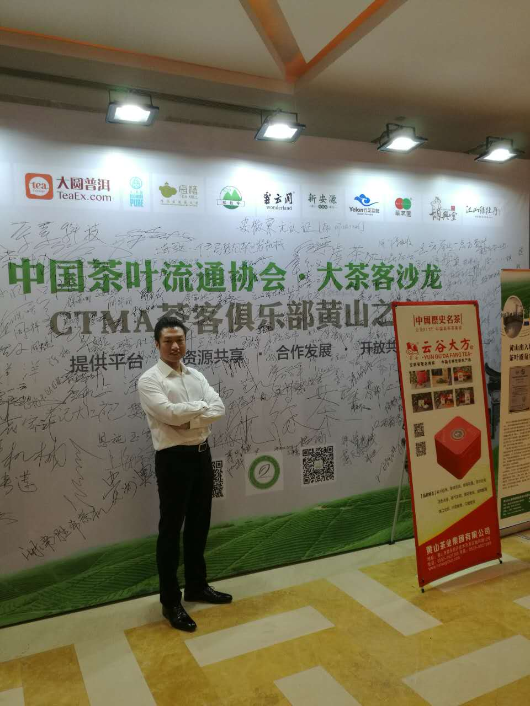
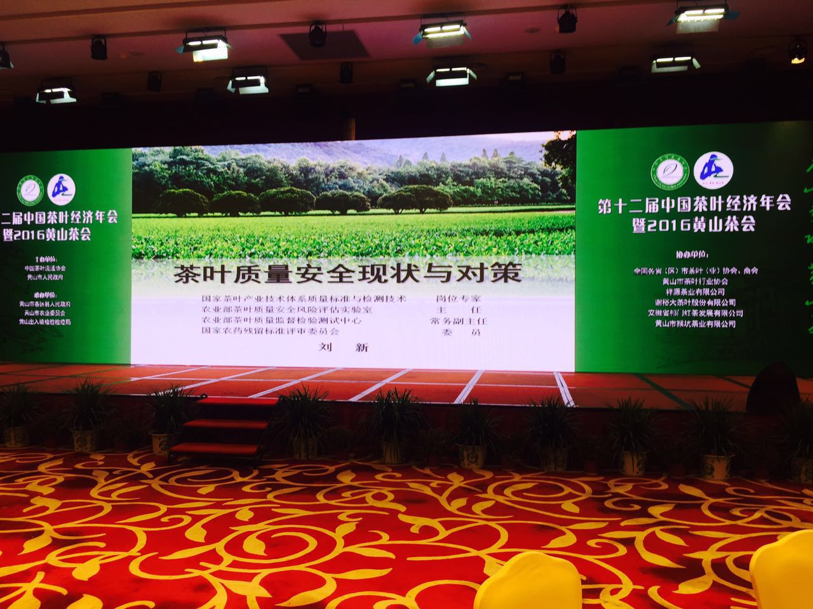
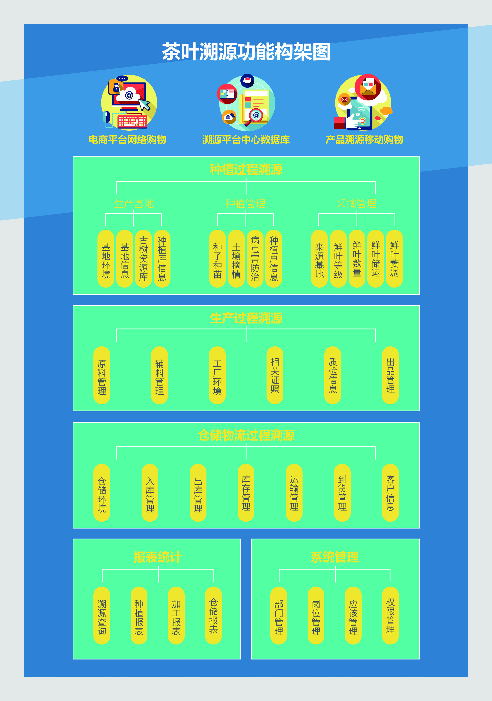

黄山、徽茶、信源人
关于盛会
金秋十月，丹桂飘香。在这个喜迎丰收的季节里，中国茶叶界又将迎来一年一度的茶界盛事。10月24日至27日，由中国茶叶流通协会、黄山市人民政府主办的第十二届中国茶业经济年会暨2016黄山茶会即将在天下第一名山、中国名茶之都——安徽省黄山市隆重举行。
中国是茶的故乡，茶产业一直以来是中国的特色农业。中国茶叶流通协会作为茶叶行业权威社团组织，多年来积极发挥中介职能，持续为中国茶叶事业奉献力量。中国茶业经济年会是中国茶叶行业内首屈一指的年度盛会，其前身是始创于1984年的“中国茶叶信息网年会”。作为全国茶叶界最大的交流、沟通平台，会议规模屡次突破千人，参会代表涉及协会会员代表、知名茶叶企业代表、行业社团代表、全国重要产茶省、市、县级涉茶部门领导、专家学者等，涵盖种植、生产、流通、科研、教育等多领域主要单位和企业。

第十二届中国茶业经济年会的主题是“绿色·创新·融合·共赢”。会议将对2016年度中国茶叶行业中表现优异的企业、品牌、县域政府、年度人物进行表彰，旨在树立行业榜样，激发正能量；还邀请了部委领导、相关地方政府、专家学者等，就茶叶质量安全、消费市场研究、茶金融、茶联盟及其它一系列业界所关心的热点问题，进行深入探讨。此外，会上还将举行中国茶叶流通协会的理事会，对行业工作进行汇报，对先进行业工作者和分支机构进行表彰。相信：本届年会必将在延续以往凝聚行业力量、指引行业前行的主题基础上，不断开拓创新，为中国茶产业的健康可持续发展做出新的贡献。这是一场国内茶业界最为盛大的庆典与交流合作机会，敬待业界领袖、企业精英、专家学者以及爱茶人士的积极参与。

信源人黄山行



董事长黄总率队参加盛会
信源人与各大茶企的头脑风暴时间

在茶叶质量安全现状与对策交流会上，信源人参会团队与各大茶企深入交流有关茶叶质量安全现状的各方面问题。
我公司充分利用互联网技术，实现对茶叶产品从基地种植、鲜叶采摘、原料粗制、加工包装、仓储管理、运输流转的全过程信息化动态追溯，为每一件商品建立唯一的“电子身份证”——商品追溯码。消费者可以通过微信平台直接扫描后识别真伪，并查询到该产品从种植到流转过程中重要节点的主要信息，追溯每件产品的来龙去脉，从而从根本上实现杜绝假冒、方便消费者识别的同时，实现品牌随着产品的销售流通，向经销商和消费者传播的目的。通过产品追溯体系，让产品在鱼龙混杂的市场环境中脱颖而出，从根本上建立信誉度，提升品牌形象，为社会负责。
信源国检——专注于更好的茶叶溯源解决方案
